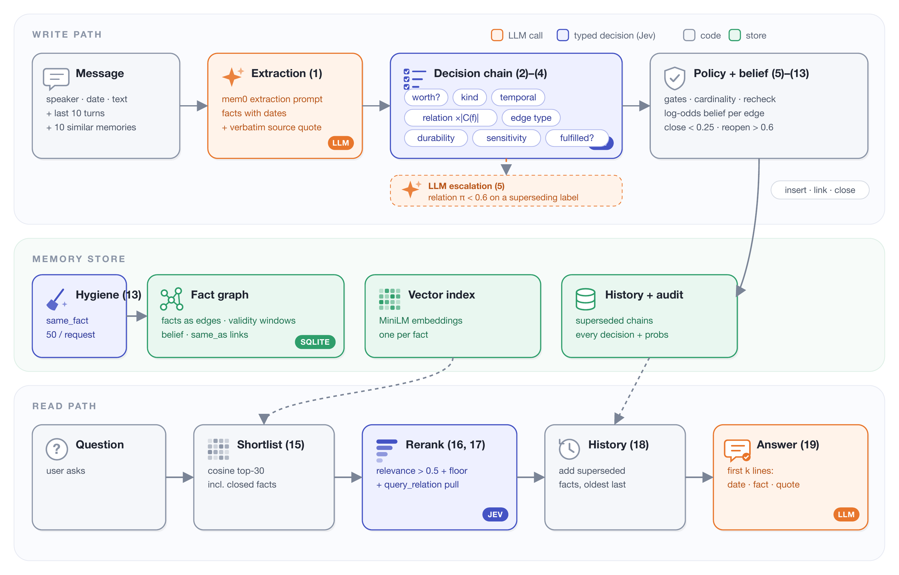
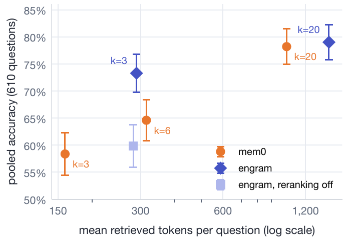

Typed Decisions in Agent Memory
Where they help, where they don't, and what it costs.
In one paragraph. A memory system for an LLM agent makes dozens of small decisions per message: is this fact new, a duplicate, a change to something stored, worth keeping at all? Those decisions are choices among a handful of options fixed in advance, which is exactly what typed decision models are built for. engram keeps the LLM for extraction and hands every later decision to one of them (Jev). That makes re-examining the store affordable: engram writes at about the cost of add-only mem0 2.1.0, which never revisits what it stored ($9.90 against $9.80 per 1,000 messages on the dev slice, $10.22–10.55 against $9.92–10.16 held out). Against an LLM decider, a claude-sonnet-4-6 implementation of mem0's update prompt with the same extraction, the decision layer is 70.0× cheaper and 27.6× faster at the median (that arm made no escalations), with equal accuracy on a 35-question dev slice. On 610 held-out LoCoMo questions, at a matched retrieved-context budget, engram answered 8.7 points more than mem0 (95% CI +5.2 to +12.1); with Jev's reranking off it is 13.4 points lower, so the reranker accounts for all of it. What typed decisions did not do: make answers better after facts change (a store that correctly closes stale facts scores the same as one that keeps everything), or beat mem0 at k=20, where the two are indistinguishable.
1. Why memory decisions are expensive
An agent's memory turns conversation into facts it can look up later. Each write has two halves:
- Extraction: which facts does this message state?
- Decisions: for each extracted fact, is it new, a duplicate, a refinement, or a change to something already stored? Is it worth keeping? Is it sensitive? Does it fulfil a plan we stored earlier?
In the open-source systems I looked at, both halves are LLM calls. mem0 2.1.0's default add() makes one LLM call
per message and emits only additions; its older update step, which asked an LLM to label every new fact ADD, UPDATE,
DELETE or NONE against the most similar stored memories, still ships as DEFAULT_UPDATE_MEMORY_PROMPT. Zep's
Graphiti resolves entities and invalidates edges with LLM calls; MemGPT/Letta manages memory through LLM function
calls; A-MEM writes note attributes with an LLM.
At an LLM call per decision, nothing ever goes back over the store. Facts that stopped being true stay in it, and the answer model is left to sort out which of "lives in Paris" and "lives in Berlin" is current.
The observation this project starts from is that almost none of those decisions are open-ended. They are choices among a small, fixed set of labels, and there is a class of model built precisely for that.
2. Typed decisions
A typed decision model takes a JSON state and a list of questions and returns a probability distribution per
question. A question is a choice among named options (each with a short rubric), a yes/no, or a score. I used
TypeSafe's Jev (jev-1.13.0), billed at 0.042 USD per million input tokens; output tokens are free, and one request
can carry many questions.
Formally, a decision backend answers a typed question with option set , given state , by returning
The decision is the argmax option and its confidence is the largest probability:
Everything engram does with Jev's output is a rule over and . That is the whole trick: the model supplies probabilities, and a small, auditable policy decides what happens to the store.
3. engram in equations

Five thresholds do all the work, and all of them are in one config file that a test checks against the paper: a decision acts at ; a superseding relation below is escalated to an LLM; a retrieved fact counts as relevant above ; belief closes a fact below and reopens it above .
3.1 The store
After message the store is : facts as edges between entity nodes , and a vector index over fact texts. Every fact carries its text, the verbatim quote it came from, the date it was said, a validity window, and a belief that it is still true.
3.2 Write path
Extraction. An LLM extracts facts from the new message, seeing the last ten messages and the ten most similar
stored facts, exactly the inputs mem0 2.1.0's add() builds:
Candidates. Each new fact is compared with the ten most similar stored facts, plus up to ten facts that cosine similarity tends to miss: same subject and relation, or a shared rare named entity.
One request per fact. Six fact questions (worth remembering, kind, temporal status, relation type, durability, sensitivity) and one relation question per candidate go to Jev together. The relation options and their superseding subset, the answers that could close an old fact, are
Three zones. With and the relation and confidence for the most likely candidate :
Only uncertain superseding decisions, the ones that could wrongly close a true fact, pay for an LLM call.
Three gates on closing. A piece of evidence against a stored fact counts only if all three hold. The temporal gate stops plans and hypotheticals from closing anything (it sums current and past because Jev often splits a completed change between them):
The cardinality gate lets a new value replace an old one only where the relation holds one value at a time, so "likes hiking" never closes "likes painting" (sib means same subject and relation):
And the first piece of evidence against a fact must be confirmed by a second phrasing of the relation question:
Belief, not deletion. Nothing irreversible happens on one answer. Answers become evidence in log-odds,
and accumulate on the stored fact, while the new fact gains what the old one loses:
A fact closes when its belief drops below and reopens if later evidence lifts it above
; the gap between the two keeps a fact from flickering on alternating answers. Duplicates become
reversible same_as links, never merged text, and a separate yes/no question closes plans when they happen.
A bug the equations exposed. In the first version (v2), every answer counted. A duplicate answer at
has , so weak support lowered belief. The fix (v3) counts an answer only
when . On the dev slice with both update sets v3 ignored 36 and 39 weak answers; with Jev it closed the
same facts, and it removes the failure that, with a weaker decision model, closed true facts.
3.3 Read path
For a question with a budget of lines:
One Jev request scores all thirty shortlisted facts. The ten closest facts are kept as a floor even if Jev judges few relevant; a question that names a relation ("where does she live?") pulls in currently valid facts of that relation; and each kept fact brings the facts it superseded, so "where did she live before Berlin?" finds Paris. The answer model sees the first lines, each with the date the fact was said, the fact, and its source quote:
3.4 What escalation buys
With a per-decision Jev cost , an escalation cost and an escalation threshold on :
Raising trades cost for error only if the LLM is more accurate than Jev on exactly the cases Jev is unsure of, . Section 7 puts numbers on both curves.
4. Setup
Every arm uses the same models: claude-haiku-4-5 extracts facts for both systems, and claude-sonnet-4-6 answers and judges with mem0's LoCoMo evaluation prompts. The baseline is mem0 OSS 2.1.0 in its default configuration. Data:
- dev: LoCoMo conv-26, sessions 1–4 (76 messages, 35 questions), used for development;
- held-out: conv-30, conv-41, conv-42 and conv-43 in full (610 scored questions), run once, after the configuration was frozen under a git tag;
- update sets: two sets, drafted and labeled with an AI assistant at the author's direction, appended to the dev slice, because LoCoMo barely tests updates. Set 1 has 30 items, including 10 no-close traps (past-tense mentions and unrealised plans that must not close anything); set 2 adds 28 messages and 20 questions about chains of changes and past moments.
Both systems answer the same questions, so every comparison is paired. For question , , and I report the per-question interval
an exact McNemar test on the discordant questions, and a cluster bootstrap that resamples the four conversations (with four clusters, a robustness check rather than a primary interval). Every LLM and Jev call is cached by its full request; the ledgered experiments cost $101.79 in API calls.
5. Result 1: re-examining the store at about mem0's write cost
The cleanest experiment holds extraction fixed and swaps only what decides afterwards: Jev's typed questions, or claude-sonnet-4-6 with mem0's update prompt, one call per extracted fact.
| dev slice, 76 messages | accuracy | decision cost / 1k msgs | decision p50 | total cost / 1k msgs | facts stored |
|---|---|---|---|---|---|
| mem0 2.1.0 | 30/35 | – | – | $9.80 | 46 |
| engram, LLM decision layer | 31/35 | $8.782 | 7,675 ms | $18.70 | 18 |
| engram, Jev decision layer | 31/35 | $0.125 | 278 ms | $9.90 | 47 |
With typed decisions the decision layer is 1.3% of the cost of a write; with the LLM it is 47.0%. Extraction becomes almost the entire bill, so engram, which re-examines what it stores, writes at about the cost of add-only mem0, which never does: $9.90 against $9.80 per 1,000 messages here, and $10.22–10.55 against $9.92–10.16 on the four held-out conversations. Against the LLM decider, with equal accuracy on this 35-question slice, typed decisions are 70.0× cheaper and 27.6× faster at the median.
Neither ratio contains an escalation: the Jev arm made none on the dev slice. The frozen system escalates unsure superseding relations and asks more questions per fact; on the held-out conversations it escalated 31 decisions, its median decision latency was 868–1,982 ms, and its median end-to-end write was slower than mem0's on 3 of 4 conversations.
Two honest caveats. The ratios are specific to that comparator: batching several facts per LLM call, or a smaller LLM decider, would narrow them, and I did not measure either. And "same extraction" means the same model, prompt construction and implementation, not the same state: extraction reads the store, the two stores diverge, and 26 of the 76 dev messages produced different extraction outputs between the two arms.
6. Result 2: retrieval under a small budget, and where the gain comes from
Under a three-memory budget engram beat mem0 by 14.9 points. But engram's lines are longer (each carries its source quote): 290 tokens per question against mem0's 159. So the fair comparison gives mem0 as many tokens. I answered the same 610 questions from mem0's stores at every from 3 to 8 and took the whose token count matched: , at 315 tokens, slightly more context than engram.

| held-out, 610 questions | k | tokens / q | accuracy | Δ vs engram (points) | 95% CI | McNemar p |
|---|---|---|---|---|---|---|
| engram | 3 | 290 | 73.3% | – | – | – |
| mem0 | 3 | 159 | 58.4% | +14.9 | [+11.2, +18.7] | 2.4e-14 |
| engram, reranking off | 3 | 282 | 59.8% | +13.4 | [+10.1, +16.8] | 1.1e-14 |
| mem0, token-matched | 6 | 315 | 64.6% | +8.7 | [+5.2, +12.1] | 1.3e-06 |
| engram | 20 | 1,461 | 79.0% | – | – | – |
| mem0 | 20 | 1,024 | 78.2% | +0.8 | [−2.3, +3.9] | 0.679 |
At a matched budget engram is 8.7 points ahead (conversation bootstrap +2.4 to +14.7), and ahead in every scored category. Matching the context removed 41.8% of the k=3 gap; the rest is which memories reach the top three.
To attribute it, I re-answered the same 610 questions from the same frozen engram stores with Jev's reranking turned off, so the answer model sees the cosine top three. Accuracy fell by 13.4 points, to 59.8%, which is 4.8 points below token-matched mem0 (95% CI −8.4 to −1.1). The reranker is responsible for the entire matched-context lead; without it, the rest of engram's read path is worse than mem0's at the same budget. At the two systems are indistinguishable.
One more result belongs here, because leaderboards include it. LoCoMo's fifth category, adversarial, asks about things the conversation never says; the right answer is to abstain. Across 190 such questions engram with reranking scored lowest: 71.1% at and 67.9% at , against about 75% for every mem0 setting and 76.3% for engram without reranking. I did not test why. mem0's answer prompt, which both systems use, never asks for abstention, and a context of relevant-looking memories may invite an answer. Over all five categories engram at scores 72.8% against 67.2% for token-matched mem0, and at 76.4% against 77.5%.
7. Result 3: what the store does, and how calibrated the decisions are
Trap items. The frozen arm stored 8 of the 10 no-close traps and closed none of them (0/8), with 1 wrong plan_fulfilled close
and 1 close that matched no labeled pair. A simpler policy that closed whenever a superseding label cleared 0.85 made
11 closes on the same data, 8 of them unlabeled. A relaxed plan heuristic fired 25 times and was wrong 24 times; the
dedicated yes/no question that replaced it was asked 234 times and closed 2 plans correctly and 1 wrongly.
Contradiction regression. On 50 labeled contradiction pairs, Jev's relation is in the accepted set for 90.0%, its temporal status is right for 94.0%, and the write path's close rule makes no false closes.
Calibration. The belief update treats as a likelihood, so calibration matters. With items, confidence on the chosen label and bins ,
On the gold pairs Jev's relation ECE is 0.14 and its NLL 0.57. The more interesting number is on the 29 decisions Jev was unsure of, labeled by claude-sonnet-4-6: there Jev's NLL is 3.18, worse than the zero-shot open model's 2.11, because Jev's mean confidence on them is 0.92. When Jev is wrong there, it is confidently wrong, which is exactly what the escalation threshold can't see.
The cost/error curve. On the gold pairs, Jev alone errs on 10.0% of relations at per decision; an escalation costs . At , 32.0% of decisions escalate, cost rises to $0.002368 per decision, and error falls to 6.0% if the LLM were perfect () or 9.2% at . Error only drops where escalations are almost the whole cost, and how far it drops depends on an I did not measure.
8. The negative result: closing stale facts didn't change answers
This is the part of the design aimed at correctness, and on these LoCoMo-derived evaluations, with this extraction, rendering and answer setup, it made no difference to answers. mem0 never closes anything and leaves every one of the 18 stale set-1 items active, yet answers 29/30 set-1 update questions. The arm that closes most aggressively leaves 10/18 stale and answers 30/30. Removing every date, validity window and source quote from the answer context still leaves mem0 at 29/30. Only the budget separates the systems (25/30 against 30/30), and that is a retrieval effect, not a closing effect. Set 2, built around chains of changes and past moments, is at ceiling for every arm.
The answer model resolves recency on its own: extraction writes dates into the memory text, and the model reads them. A benchmark that rewards a correct store would score answers against validity windows, use budgets small enough that a stale fact displaces a current one, store memories without dates, and ask about long chains of changes. Current LoCoMo-style questions do not reward a correct store.
An exploratory aside: the base checkpoint of a 421M open-weights decision model (Laya), used zero-shot, which its own documentation advises against, agreed with Jev on only 5.9% of relation decisions and chose an accepted relation for at most 48.0% of the contradiction pairs. Its fine-tuned checkpoint is the obvious follow-up and was not tested.
9. Limitations
One baseline (mem0 OSS 2.1.0) on one benchmark (four held-out LoCoMo conversations, so four bootstrap clusters). The
update sets were drafted and labeled with an AI assistant (Claude) at the author's direction; the author reviewed a
subset. The 50 contradiction pairs were written and labeled by the author. One decision model, Jev, is a
closed, versioned API (jev-1.13.0): its weights are not public, a later version may decide differently, and the
results can be replayed from the call cache but not recomputed if that version is withdrawn. The judge is the answer
model (claude-sonnet-4-6), so it may favour answers written its own way, and I did not measure its agreement with
humans. Every score comes from one model stack, so none of it is comparable to leaderboards run on other stacks. Extraction shares model and implementation across
arms but not state, and I did not run an arm with frozen extraction outputs.
10. Reproduce it
git clone https://github.com/ris3abh/Engram && cd Engram
uv sync --extra bench
make reproduce-dev # replays the decision-layer table from a shipped cache: $0, no API keys
make reproduce-dev re-runs the three dev-slice arms with the experiment code against a 1.9 MB subset of the call
cache and prints every cell next to the paper's; accuracy, costs and stored facts match exactly. Every other table has
a command in the paper's Appendix E. The update sets, contradiction pairs, escalation labels and all 7,150 per-question
answers are on the Hub as ris3abh-11/engram-eval.
Citation
@misc{sharma2026typed,
author = {Sharma, Rishabh},
title = {Typed Decisions in Agent Memory: Where They Help, Where They Don't, and What It Costs},
year = {2026},
publisher = {Zenodo},
doi = {10.5281/zenodo.22948964},
url = {https://doi.org/10.5281/zenodo.22948964},
note = {Version 1.1. Version 1: doi:10.5281/zenodo.22941758}
}